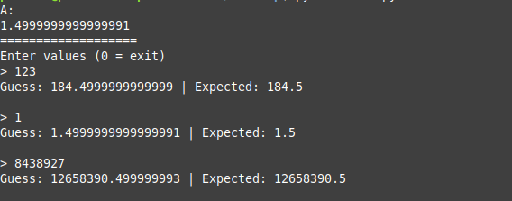
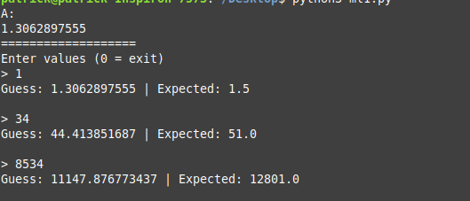
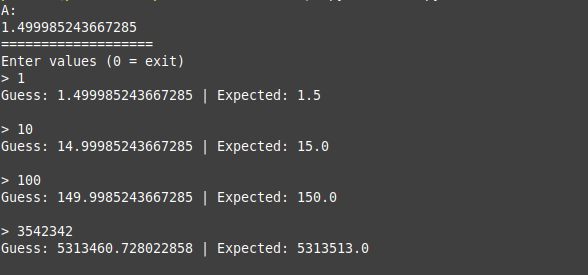
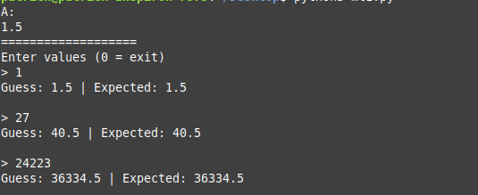
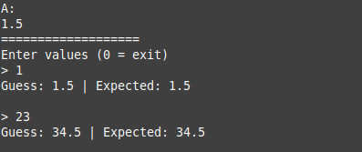
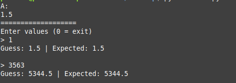
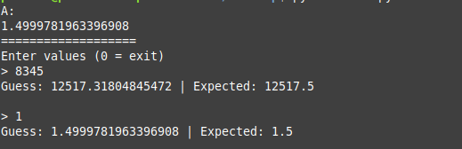

Machine Learning 101
My current summer internship has required me to learn a little bit about AI/Machine Learning. In all honesty, it's something I've been meaning to look at for a while now. The math aspect has led to the procrastination, but now that I'm diving into it, the math doesn't seem as complicated as it initially looks. Today, I'm going to share a simple, introductory machine learning program written in Python.
To make reading easier, I'm going to divide this into several sections. The complete code can be found near the end. Let's dive in!
Neural Networks 101
Hopefully I'm not disappointing you, but we aren't about to make something fancy like a speech prediction program :) No, we are simply looking at a simple machine learning program based on a neural network. So what does this mean?
Computers are great at solving problems. This is where they outshine our human brains. Even the smartest among us have issues making huge calculations quickly- or a huge number of calculations quickly. Computers, on the other hand, can easily do a huge number of calculations quickly and easily. However, computers aren't great at problems like recognition- image recognition, speech recognition, languages, learning, and so forth. These are problems that generally cannot be expressed in terms of simple algorithms.
Let's take language for an example. Computers are good with programming languages, but only because programming languages follow a tight, absolute syntax. Human languages are anything but that. They are fluid, and syntax and grammar can vary. Not only that, languages are often meant to express abstract concepts, rather than the absolutist concepts of programming languages. There is no algorithm that can be used to accurately represent a human language. The solution? Try to get computers to mimic our brains.
This is where neural networks come in. Despite their fancy sounding name, they aren't as difficult to understand as they sound. That's the beauty of great ideas by the way- they are often elegant in their simplicity. But anyway. A neural network is made up of a network of interconnected neurons. Each neuron (called a perceptron) has at least two inputs and one output. There is a weight associated with each input, and an overall threshold value. Each weight is multiplied by the input, and all these multiplications are summed. If this sum is greater than the threshold, the perceptron is activated. Otherwise, it stays 0.
Usually, these weights are not known beforehand. There is where the idea of "training" comes in. When a neural network is trained, it is fed a large amount of data- whatever number of inputs are needed, and the correct answer. The training function feeds a perceptron the inputs. If the output matches the correct answer, great! Otherwise, the weights are adjusted, usually as a combination of the learning rate and the error amount. The learning rate is an important value. We want to adjust the rates, but we don't want to adjust them too much or training does no good.
So What Is Our Goal?
Hopefully you can see the logical end result of this. By adjusting the rates, we can essentially determine a linear function by no other data than the input. Once the function is sufficiently trained, the perceptron outputs will be very similar to the expected answer. Fun fact: linear algebra is the base of machine learning, so make sure you have a basic familiarity with that.
In this tutorial, we are going to train a program to solve "y = Ax".
But there's a catch. We don't know what A is. That's what the computer will have to figure out. X is the input, and Y is the output. Of course, we know beforehand (as the programmer) what A is, so we will calculate some training data. After that, the user should be able to input any X value, and get a very close Y value.
For this program, A = 1.5.
Step 1: The Perceptron
Let's start by making the perceptron. The complete code is at the end, but here is part of the perceptron:
class Node:
A = float(1)
L = float(0.1)
def calc(self, x):
return x * self.A
def train(self, data):
x = data[0]
y = data[1]
guess = self.A * x
error = y - guess
if error != 0:
A2 = self.L * (error / x)
self.A += A2
Let's take a look at this. First of all, in any language, you want your perceptron to be a class or some separate entity of some sort. Python fortunately has classes, so it is very conducive to this. Let us start with the first two class variables: A and L. A is what we are trying to figure out- this would be the "weight" I referred to in the previous section. L is the learning rate. Generally, you want to keep this small. It will take some experimentation to get the optimal value.
Now let's look at the functions. The "calc" function is pretty straightforward- it returns X based on our current A value. The train function is a little more complicated. It takes a tuple of data: an X value and the expected Y value. The first step is to make a guess- calculate Y based on the current A value. Then we calculate the error: Y - guess (the expected value - guessed value). If there is no error, the error variable will be zero and we have nothing to do. However, if there is an error, we need to adjust A. We calculate an adjustment based on the learning rate and the error, and add it to A.
And hopefully that made some sort of sense :)
Step 2: Train
Now, we need to train. In order to train, we have to calculate the data:
training = [(0,0)]
for i in range(1, 10000):
y = float(1.5) * float(i)
training.append((i,y))
The training data is an array of tuples: an X value, and the corresponding Y value. As I said above, we know the correct A value is "1.5", so obviously we calculate our training data based on this.
Something very important to note is the amount of training data. Depending on how much you've read about machine learning, you may have seen stories about the algorithms being trained on
huge amounts of data. There is a reason for this. The more you train, the more you can refine your weights, and the more likely you will get the correct results. In this case, we train with 10,000 pieces of data. Huge, right? As you will see shortly, we end up with a very nearly accurate A value. If you adjust the amount of training data, you will find that it becomes less accurate.
Putting It All Together
You may be surprised- only two steps?!? Yes indeed, a simple machine learning program like this isn't very complicated. The actual algorithm is only 30 lines of Python code, with another 20 for various helper functions. Anyway, here is the complete listing:
#!/usr/bin/python3
class Node:
A = float(1)
L = float(0.1)
def calc(self, x):
return x * self.A
def train(self, data):
x = data[0]
y = data[1]
guess = self.A * x
error = y - guess
if error != 0:
A2 = self.L * (error / x)
self.A += A2
def train_all(self, data):
for d in data:
self.train(d)
def print_a(self):
print(self.A)
# Formula: y = 1.5x
training = [(0,0)]
for i in range(1, 10000):
y = float(1.5) * float(i)
training.append((i,y))
#print("")
#print("Training data:")
#print(training)
#print("")
node = Node()
node.train_all(training)
print("A: ")
node.print_a()
print("===================")
print("Enter values (0 = exit)")
enter = float(input("> "))
while enter != 0:
expected = float(enter*1.5)
guess = node.calc(enter)
print("Guess: " + str(guess) + " | Expected: " + str(expected))
print("")
enter = float(input("> "))
And here is what the output looks like:

Take a look at the A value here. Remember that the correct A value was 1.5? As you can see, the machine learning algorithm was very, very close- close enough to be accurate for our purposes. If you look at the calculations, you can see that they too are also quite close.
Training Size and Learning Rate
Remember how I said that both the training size and the learning rate are important to getting the correct results? Using the code above, let's experiment with that sum!
First, let's change the training size to "10" and "100" respectively:

Training with 10 values

Training with 100 values
As you can see, training with 10 values isn't great. The results are in the ballpark, but that's really it. As you get to larger and larger values, they will become more and more wrong. Now take a look at what happens with 100 training values. It's better- it's not horrible- but it's still not great. It ultimately takes experimentation to determine how many training values you need, but as a rule of thumb: more is better.
Now let's take a look at the learning rate. We're going to change it to 1 (no learning rate), 1.2, 0.5, and 0.01:

Learning rate of 1

Learning rate of 1.5

Learning rate of 0.5

Learning rate of 0.01
See the benefits of experimenting with different learning rates? As you can see, when we changed it, we ultimately ended up with an even better, or even completely correct result than we started. Of course, you have to realize this was a simple problem. As you get into more advanced problems, having an absolute learning rate will not be beneficial.
Conclusion
Hopefully you found this little introduction to machine learning interesting! I certainly did- when I first dove into it, I was amazed at what a good idea the neural, perceptron model was. It's really amazing what we can get computers to do.
This warrants an entirely separate post, but AI/machine learning is dangerous territory. Let me be clear: I'm not against AI/ML as a concept. There are areas where it can be incredibly useful. But we must tread lightly as a society. The technology will only continue to advance, and like any tool, it AI can be leveraged for good, useful purposes, but it can also be leveraged for evil, controlling purposes. As a society, we've been viewing technology through a lens that any achievement- any advancement- is by definition good. Fortunately, there is a change- a waking up to this- but not enough people have woken up to it. Perhaps in no other area of computer science as AI do we need to take a serious look at the ethics and make sure we do our part to stay on the right side of history with this technology.
Like I said, I originally began exploring AI/ML because of my job- there is potential to apply machine learning in various development environments- but I also began learning because I wanted to understand the technology better. I intend to keep learning.
But anyway. Enough statements. I hope you found this interesting and informative!